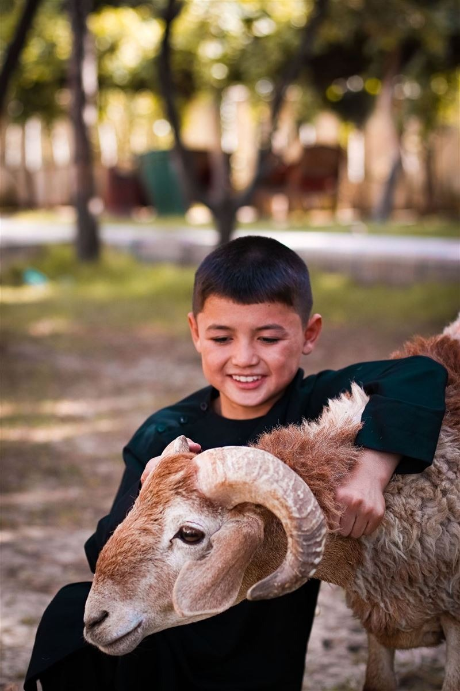
KurbanSadakalı Şifa Kurbanı
Şifa niyetiyle paylaşılan bir iyilik, ihtiyaç sahibi sofralara ulaşsın.
BİRLİKTE İYİLİĞE
İyiliğin ulaşacağı yeri siz seçin.
Bir sofraya bereket, bir çocuğa umut,
bir hayata dokunan destek olun.

KurbanŞifa niyetiyle paylaşılan bir iyilik, ihtiyaç sahibi sofralara ulaşsın.
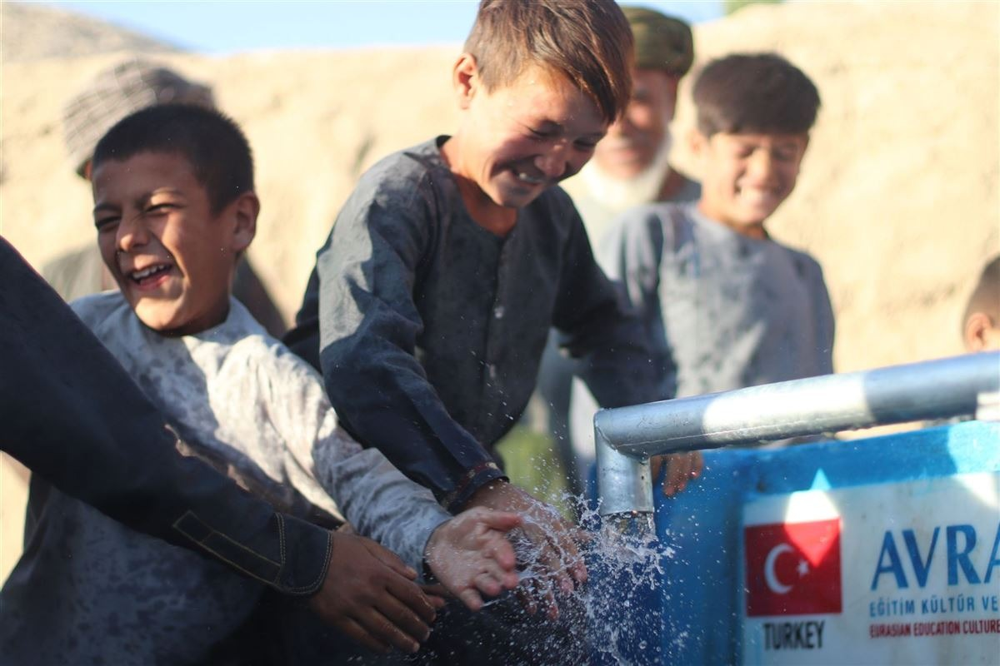
Su KuyusuBir damla suyla başlayan iyilik, nice hayata umut olsun.
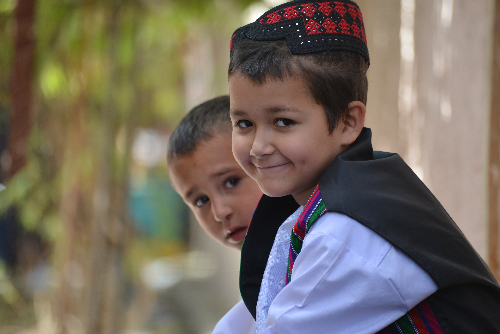
Sosyal YardımSoğuk günlerde bir evin sıcaklığına katkıda bulunun.
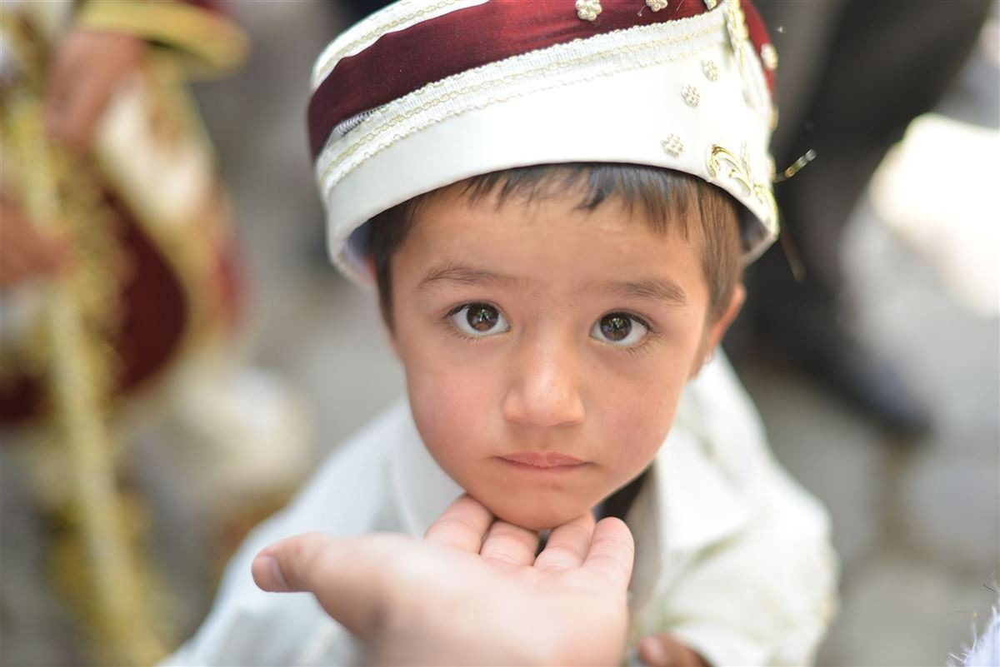
Sağlık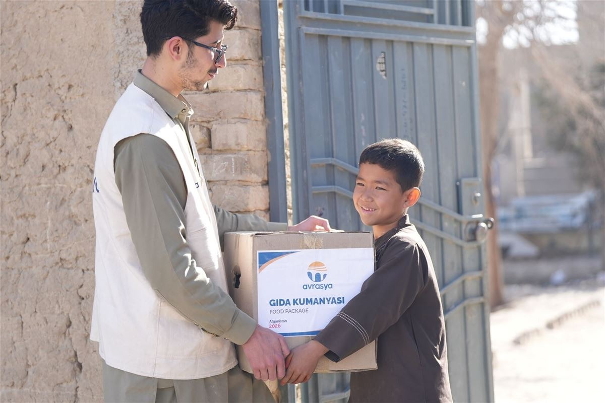
Gıda & İftar Zekât & Sadaka
Zekât & Sadaka
Yolunuz iyiliğe çıksın, paylaşmanın bereketi çoğalsın.
Zekâtınızla ihtiyaç sahiplerine destek, yarınlara umut olun.
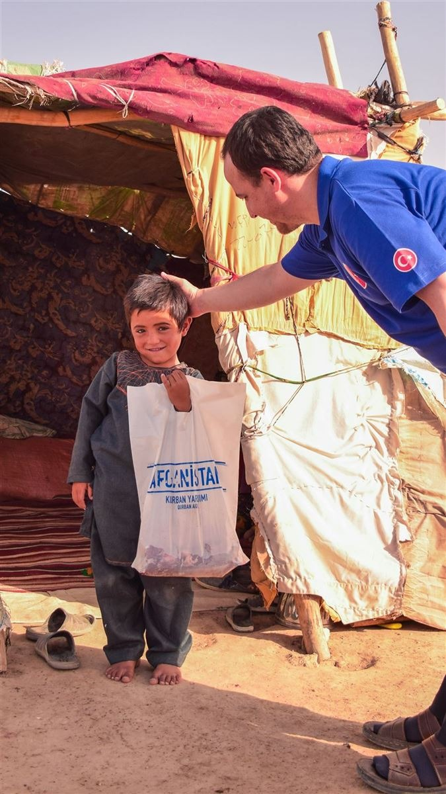
Kurban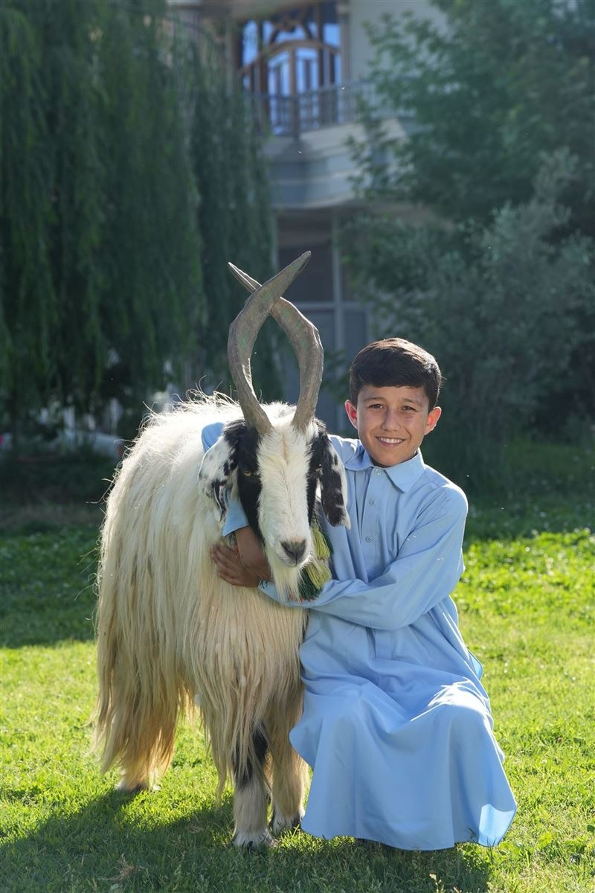
Kurban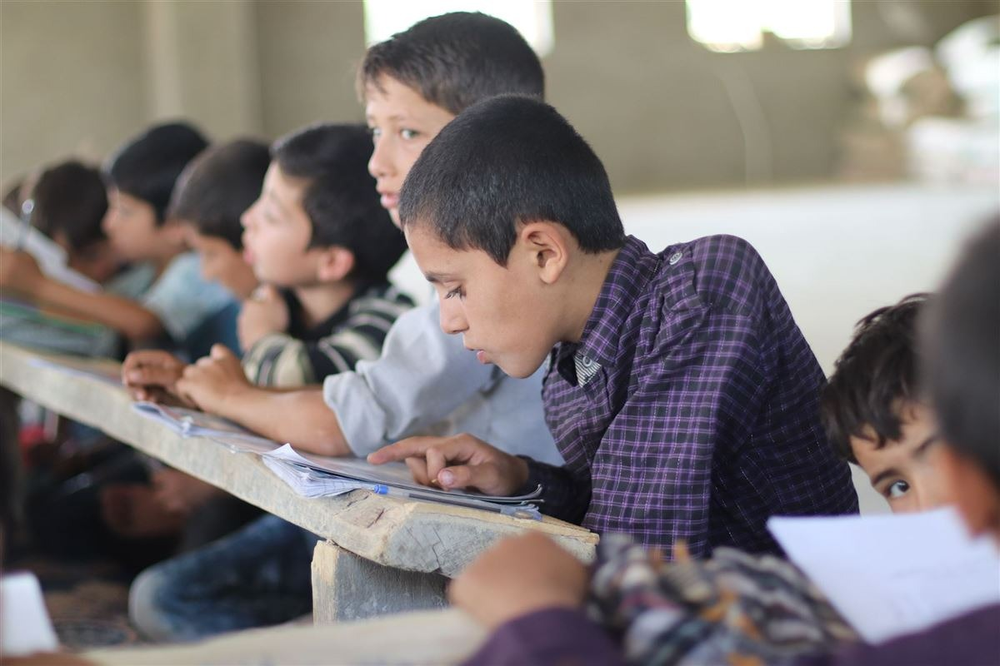
Eğitim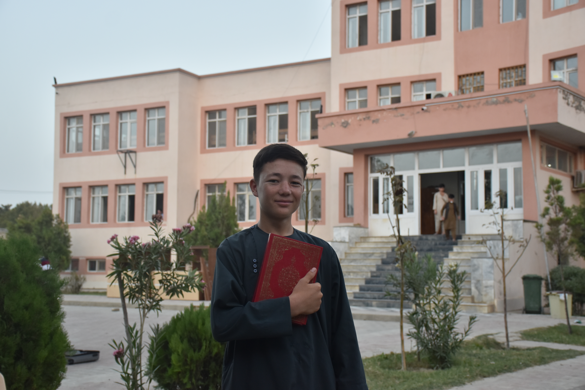
Eğitimİlim yolculuğundaki bir öğrencinin yanında olun.
 Eğitim
Eğitim
Bir öğrencinin eğitim yolculuğuna umutla eşlik edin.
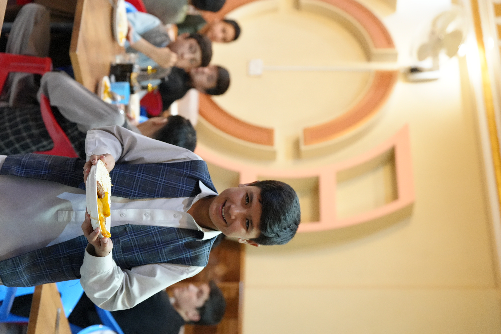
Gıda & İftar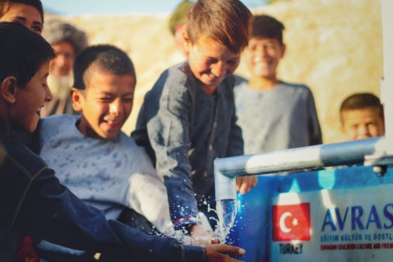
Su Kuyusu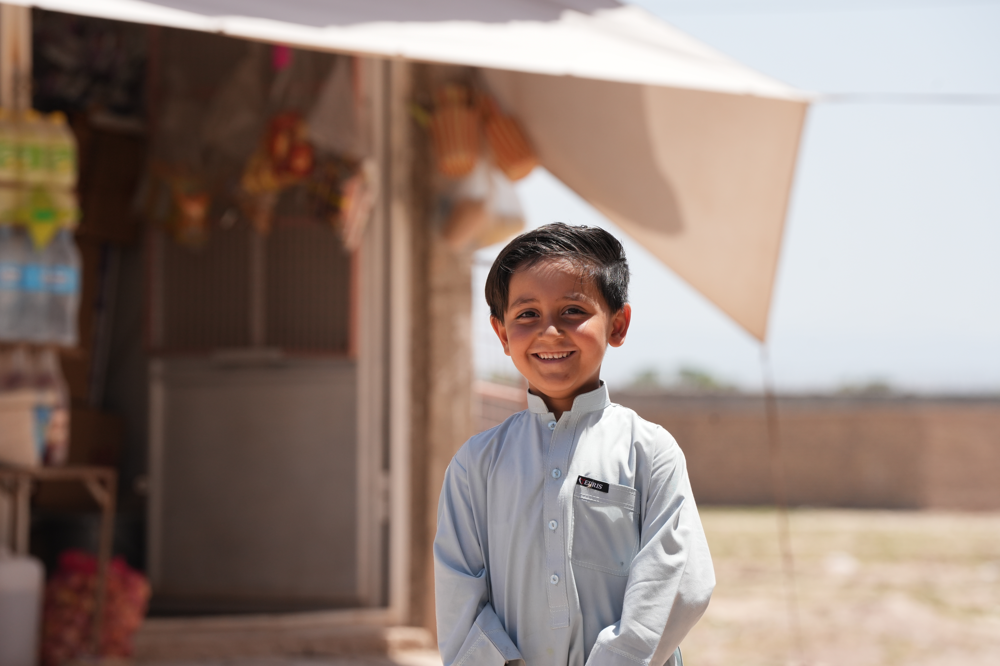
Zekât & SadakaDesteğiniz, ihtiyaç duyulan yerde bir iyiliğe dönüşsün.
Küçük ya da büyük, her iyilik bir hayata dokunur.
Faaliyetlerimizden haberdar olmak için e-posta adresinizi bırakın.
Kategori seçin, tutarı belirleyin
Bu web sitesi deneyiminizi iyileştirmek için çerezler kullanmaktadır. Çerez Politikası
Dil, para birimi ve görünüm tercihinizi buradan değiştirebilirsiniz.